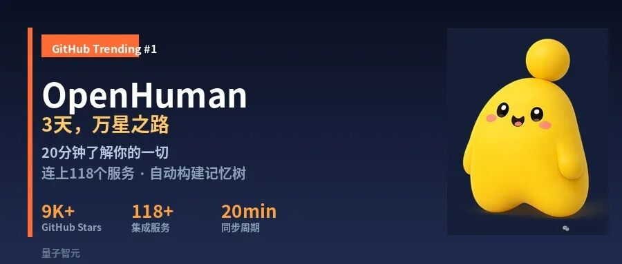
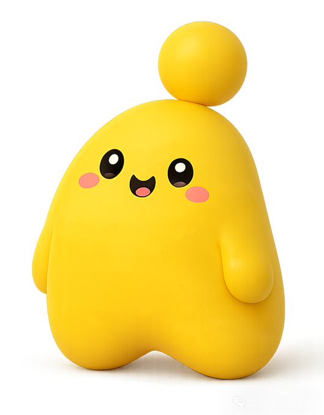
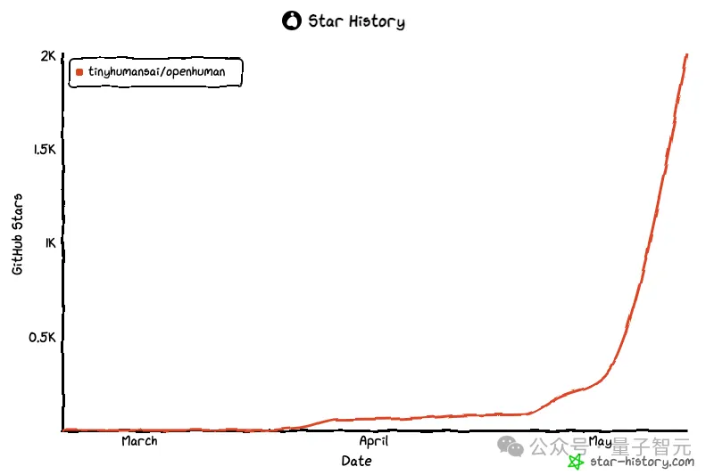
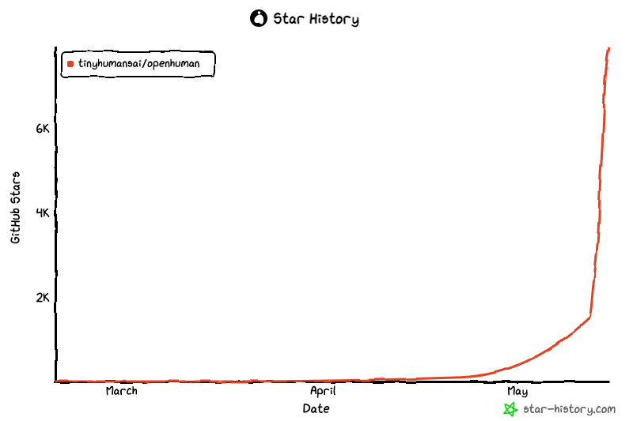

我上次这样盯着GitHub Star走势，还是OpenClaw那会儿。
两天前，OpenHuman这个仓库的Star数还在2K出头徘徊。今天我再刷新——已经接近1万星了。GitHub Trending第一，一天涨千星。用这种速度往上窜的项目，今年一只手数得过来。
开发者们为什么疯了一样给这个项目点星？答案可能跟你想象的不一样。不是因为"又出了一个能写代码的Agent"——那太多了。而是因为，这个Agent，不需要你教它。
说得更直白一点：你养过虾，养过马，你大概已经累了。
虾是OpenClaw，马是Hermes。前者解决了多步任务自动执行的问题，后者证明了开源社区可以快速复现。但这两个东西有一个共同的前提——你得先教它。写prompt，配skill，调工作流。每一步都在消耗你的心力。你花了两小时调好一个工作流，AI确实干活了，但你感觉像雇了一个实习生——每件事都要你手把手。
"我养AI养累了。" 这是我在开发者群里看到的一句话。而OpenHuman之所以炸了，是因为它翻转了这个问题。

OpenHuman 的官方吉祥物，据说设计灵感来自「小小人类」
01 | 从"你教它"到"它学你"，一个根本性的翻转
OpenClaw做的事是"多步任务编排"——你把一个大需求拆成步骤，它帮你串起来执行。Hermes做的事是"学会怎么学"——它能在执行过程中自我调整。这两个方向都不错，但它们共同的隐含假设是：你得先有一个清晰的指令，或者至少有一套明确的工作流模板。
OpenHuman不这么想。它的出发点很简单：你天天在用的那些工具——Gmail、GitHub、Slack、Notion、Google Calendar——里面塞满了你的信息。你的邮件、你的代码评审、你的会议纪要、你的任务清单。这些数据已经忠实地记录了你工作的方式。与其让你教AI，不如让AI自己去读这些数据，然后学会你。
这看起来是一个微妙的视角偏移，但实际操作层面的差别巨大。前者是"你当老师，AI当学生"；后者是"AI当实习生，偷看你的工作记录，自学成才"。开发者们看到这个设定，第一反应不是"有意思"，而是——"终于有人做了我一直想要的东西。"


左：两天前（约2K星） 右：今天（接近1万星），同一个仓库，两张截图
02 | 三步链路：连、抓、记——每一层都藏着细节
OpenHuman的配置过程，官网标注是"三步"。但真正让开发者兴奋的，是这三步里藏着的细节。
第一步：连。 118+服务一键授权。不是让你去每个平台生成API Key再填回来——那是开发者最烦的事。OpenHuman直接走OAuth流程，你在浏览器点一下"授权"，它就拿到了读取权限。118个服务覆盖了主流的生产力工具，从代码托管到邮件通信到文档协作。注意这里的策略选择：它只读，不写。 先理解你，再谈帮你做事。
第二步：抓。 自动轮询，20分钟一次。不是你去点"同步"，不是你在命令行敲一个cron任务，它自己会定时去拉你的新邮件、新通知、新文档。20分钟的间隔是有讲究的——太密了API限流，太疏了实时性不够。这个轮询频率本身就是产品设计里少见的"懂行"表现。
第三步：记。 抓回来的数据不能直接喂给大模型——Token太多了。OpenHuman的处理流水线是：先把数据切块，每块不超过3000 Token，写成Markdown片段。然后按主题、时间线、关联对象三个维度分层组织，最终折叠成一棵记忆树。底层存储是SQLite数据库，同时自动生成.md文件——这意味着你打开Obsidian，就能直接看到这棵记忆树长什么样。
一个本来要雇专人维护的工作台，变成了一台自动运转的机器。
03 | 卡帕西式知识库，但你不用手写一个字符
Andrej Karpathy有一个著名的习惯：他把所有研究笔记、论文摘要、课程笔记整理成结构化的Markdown文件，全部塞进Obsidian，形成一个私人LLM Wiki。这件事在AI社区被反复讨论过——因为太反人性了——一个人得有多强的自律，才能在读完每一篇论文后，手动写一篇结构化的摘要？
OpenHuman本质上就是把Karpathy这套手工流程变成了全自动的。你不需要自己整理。它去Gmail读你的邮件，把重要的讨论提炼成Markdown片段；它去GitHub读你的PR和Issue，把技术决策整理成记忆节点；它去Slack读你的频道消息，把有价值的讨论归档。你不是在搭建一个AI知识库——你只是在用你本来就用的工具。
区别在哪？Karpathy的做法是"我手动构建一个属于我的知识宇宙"。OpenHuman的做法是"你的知识宇宙一直在自动生长，你只是之前没意识到"。
04 | TokenJuice：数据到模型嘴边之前，先榨干冗余
所有数据最终要送到大模型那里。但原始数据里充满了冗余——邮件签名、HTML标签、重复引用、URL参数里的追踪码。直接喂进去，Token消耗快得吓人。
OpenHuman内置了一个叫TokenJuice的预处理层。它的工作分三步：第一，把HTML转成干净的Markdown，去掉所有样式和脚本标签；第二，把长URL缩成短引用，去除追踪参数；第三，做冗余去重——同一封邮件在"已发送"和"收件箱"里出现两次，只保留一份。
官方声称这套流程能砍掉80%的Token消耗。我没有完整验证这个80%，但原理上是成立的。 自己测试把一周的Gmail导出来，原始HTML转成Markdown加去重，Token数从4万多降到了1万出头。对于那些API账单敏感的独立开发者来说，这可能是OpenHuman最务实的细节。
还有一个隐藏的设计选择：预处理全部在本地完成。 你抓取的原始数据在没有被你授权之前，不会离开你的机器。TokenJuice跑在你本地的Python进程里，结果才交给大模型API。对于有数据合规要求的开发者，这不是加分项——这是门槛条件。
05 | 局限在哪：必须知道的几个边界
任何工具都有自己的适用半径。OpenHuman在这几件事上，目前做得还不够。
第一，英文工具生态。 Gmail、GitHub、Slack、Notion、Google Calendar都在列表里，覆盖得很好。但是飞书、钉钉、企业微信这些国内主流工具，目前还不在支持范围内。如果你的核心工作流跑在飞书上，那OpenHuman暂时还读不到你最重要的那部分数据。这不是技术问题，是API生态的差异。
第二，本地化存储是双刃剑。 SQLite存数据不经过任何第三方云服务，隐私安全有保障。但反过来说，你的知识库只存在于你本地这一台机器。 如果你有多台设备，记忆树是割裂的。OpenHuman目前没有官方的多设备同步方案。
第三，规模上限还是未知数。 到几千个记忆节点的时候，SQLite的查询性能会不会崩？Markdown文件层级组织会不会复杂到失去实用性？目前看方向是对的，但离"成熟产品"还有距离。
06 | 能干是基本功，懂你才是稀缺的
回到那个问题：为什么开发者在疯狂点星？
整个AI Agent赛道过去两年在做什么？在让AI变得更强大、更能干、更能处理复杂任务。没有人否认这些方向的重要性。但"能干"和"懂你"是两回事。 前者解决的是能力上限，后者解决的是使用门槛。当所有人都去卷能力上限的时候，OpenHuman选择去卷使用门槛——而且卷出了一个非常清晰的答案。
给一个微不足道的细节做注脚：OpenHuman的README里写了一句"Just connect your accounts and let it learn"。这句话很轻，但它背后对应的技术选择加起来有几十个。从118个OAuth适配到TokenJuice的预处理流水线，从20分钟的轮询间隔到3000 Token的切片阈值——每一个选择都是在降低你的心智负担。
虾解决工具多的问题，马解决能自学的问题。懂你这件事，看来还得Human来。
你现在是怎么管理AI工具对你信息的访问的？还在手动整理Obsidian，还是有别的自动化方案？或者你根本还没开始，就在等一个不用教的工具出现？评论区见。
⭐点赞、转发、关注和推荐一键三连⭐